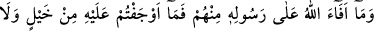
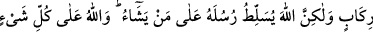
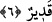

mükemmil, ilâhî rızâya ulaşan ve ulaştıranlardır ki, onların nezdinde dünyanın ve
âhiretin bir değeri, yeri ve miktarı yoktur. Onların dış görünüşleri ve görüşleri ile iç
âlemlerinin basiretleri, dünya ve âhiretin hiç birine doğru kaymamıştır. Çünkü, onlar
Allah’ın zât, sıfat ve ilâhî isimleri ile meşguldürler. Nitekim onlar hakkında Allah Teâlâ
şöyle buyurmuştur: “Onlar, ne ticaret ne de alış verişin kendilerini Allah’ı
anmaktan, namaz kılmaktan ve zekât vermekten alıkoyamadığı insanlardır...” (en-
Nur, 24/37) Diğer taraftan Allah kendi yolundan çıkanları yâni mârifet ve irfan
makamından çıkanları ve ne dünya ne de âhiretin kendilerine göre bir değeri, yeri ve
miktarı olmayan, ne dış gözleri ne de iç âlemlerinin bakışları dünyaya da âhirete de
kaymayan kullarının bulunduğunu bilmeyen kimseleri rezil etmek için böyle yapmıştır.
Üstelik onlar, o Allah dostlarını dünya sevgisiyle yerdiler ve onların hayvânî şehvetleri
cismânî lezzetleri sevdiklerini söylediler. İşte bu yermelerinin kötülüğü ile Allah onları
zelil ve hor kılmıştır.
Hâfız şöyle demiştir:
Çok tecrübe ettik, her işin karşılığı olan bu ibâdet yurdunda
Kim dertlilerle uğraşır, onları incitirse helâk olur gider.
6. Allah’ın, onlardan (mallarından) Peygamberine verdiği ganîmetler için siz at
ve deve koşturmuş değilsiniz. Fakat Allah, peygamberlerini dilediği kimselere karşı
üstün kılar. Allah her şeye kadirdir.
“Allah’ın onlardan (mallarından) Peygamberlerine verdiği ganîmetler için siz at ve
deve koşturmuş değilsiniz.” Bu âyet-i kerime yahûdilerin başına gelen ve gelecek olan
azâbı ve yurtlarının tahribiyle hurmalarının kesilmesi gibi yapılan şeylerin
açıklanmasından sonra, onlardan alınan mallar hakkında yapılacak işlemleri açıklamaya
bir başlangıçtır. Âyetin başındaki “Mâ” harfi mevsûl için olup “koşturmadınız”
anlamındaki “Mâ evceftüm” cümlesi haber olabilir. “Mâ” harfinin şartiye, “mâ
evceftüm” cümlesinin de şarta cevap olması mümkündür.
Âyette geçen “fey”, dönmek,
/efâe döndürmek anlamındadır. Âyette asıl mânâsında
kullanılmıştır.
Mânâ
şöyledir:
“Allah’ın
onların
mallarından
Rasûlullah’a
döndürdükleri; yâni dönücü kıldığı…” Dolayısıyla bu mânâda, şuna işâret vardır:
Aslında bu mallar Rasûlullah’a âid olması gerekirken haksız olarak, hak etmedikleri
halde onların ellerine geçmiştir. Allah da onu esas hak eden hak sâhibine döndürdü.